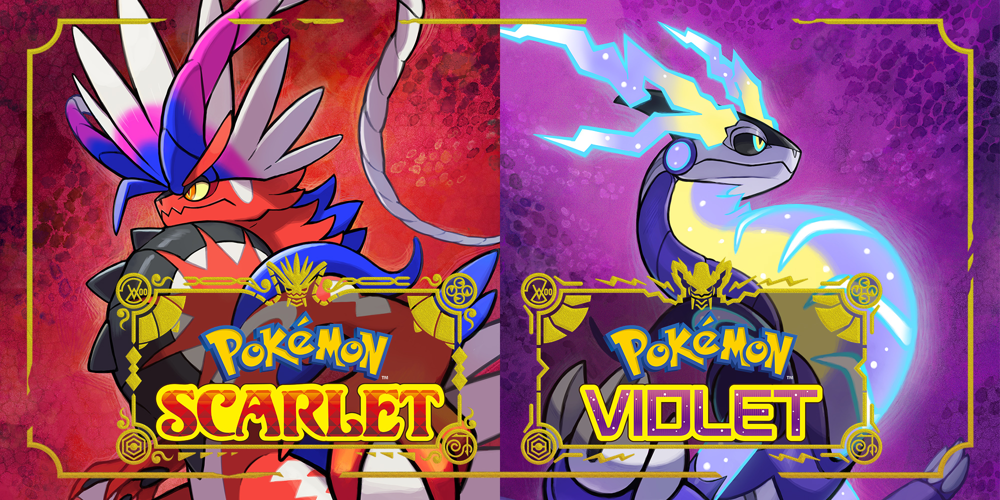

O que é Pokémon? | Nintendo | Game Freak | PokémonGO
POKÉMON SCARLET E VIOLET

O que esperar da história? Tendo em vista que os jogos acabaram de ser revelados mundialmente, ainda não há detalhes oficiais sobre a história. No entanto, os jogadores podem esperar por uma região inédita, supostamente inspirada na Península Ibérica (Espanha e Portugal), com personagens nunca antes vistos na franquia, além de um possível novo grupo antagonista que deve ser uma ameaça ao longo da jornada. Agora que os jogos já foram apresentados, não deve tardar até que a Nintendo e a The Pokémon Company intensifiquem a campanha de marketing com novos trailers de gameplay e apresentações dedicadas, como as tradicionais Pokémon Presents.
Novos Pokémon! Toda nova geração de Pokémon traz expectativas quanto aos monstrinhos iniciais. Os de Scarlet e Violet já foram apresentados aos fãs e rapidamente viralizaram nas redes sociais, com centenas de artes sendo publicadas no mundo todo. O primeiro deles é o Sprigatito, um gato do tipo planta que é descrito como caprichoso e sempre em busca de atenção. Já o segundo é um crocodilo do tipo fogo chamado Fuecoco, cuja descrição oficial aponta que ele é um monstrinho descontraído e que faz tudo no seu próprio ritmo. Por fim, Quaxly é um patinho do tipo água que chama a atenção por ser sério e vaidoso. É interessante notar como os nomes dos novos Pokémon iniciais também dão a entender uma origem espanhola, reforçando a teoria de que os novos jogos se passariam na Península Ibérica.
Mundo aberto! Pokémon Legends: Arceus, lançado em janeiro de 2022, tinha o objetivo de introduzir uma nova fórmula aos jogos da série, focando sobretudo em mecânicas de exploração em que os jogadores encontram e capturam os monstrinhos em tempo real. A premissa foi muito bem recebida pelos fãs, com reflexo direto no seu número de vendas. Agora, parece que Pokémon Scarlet e Violet darão um passo além e serão os jogos mais ambiciosos da história da franquia. De acordo com as primeiras informações, os novos games dão "um novo passo evolutivo" e entregam um "mundo aberto rico e expressivo", com várias cidades e ambientes selvagens espalhados pela região. Também será possível avistar os monstrinhos nos céus, oceanos, florestas e até mesmo pelas cidades. Aparentemente, a premissa segue intocada: os jogadores podem batalhar com os Pokémon selvagens para capturá-los. Também é muito provável que haja batalhas contra ginásios, que são tradição na série. O vídeo de anúncio traz uma cidade muito semelhante a Barcelona onde há uma construção gigante com uma pokébola no topo, que pode ter relação com uma possível Liga Pokémon.
QUAL INICIAL ESCOLHER?
Sprigatito suas estatísticas são bastante sem brilho para começar, mas, no momento em que evolui para Meowscarada, suas estatísticas de Ataque e Velocidade são incrivelmente impressionantes. Sendo do tipo Planta/Sombrio, Meowscarada tem vantagem de tipo sobre três dos oito líderes de ginásio do jogo, tornando-se uma escolha sólida para quem gosta de manter um time pequeno. Infelizmente, como muitos dos outros Pokémon felinos da série, Sprigatito falha em levar seu design felino à sua forma final, tornando-se mais humano a cada evolução.
Fuecoco pode não ter o melhor design, mas o que falta em aparência é mais do que compensado em estatísticas e eficácia de tipo. Como um Pokémon do tipo Fogo, Fuecoco se sairá bem em três dos oito ginásios dos jogos, enquanto sua forma final, Skeledirge, tem eficácia de tipo contra dois líderes de ginásio adicionais (Ryme e Tulip) por ser um Pokémon Fogo/Fantasma. Fuecoco e suas formas evoluídas também são fortes nos ataques especiais, o que é um bom presságio, já que muitos dos melhores ataques do tipo Fogo e Fantasma dependem da estatística de ataque especial. A única desvantagem de escolher Fuecoco é sua baixa velocidade, mas isso não deve ser um grande problema quando o Pokémon tem vantagem de tipo sobre a oposição.
Quaxly é indiscutivelmente o mais bonito dos três Pokémon iniciais da nova geração e é certamente o mais memorável, o que provavelmente atrairá alguns jogadores. Infelizmente, isso é tudo o que o Pokémon inicial do tipo Água tem a oferecer, já que a falta de um líder de ginásio do tipo Fogo, Terra ou Pedra torna o Pokémon bastante inútil em batalhas de ginásio até que ele evolua para sua forma final. Sendo do tipo Água/Lutador, Quaquaval pode ser útil contra Larry e Grusha, o que é um bom presságio, já que a maioria dos jogadores provavelmente os enfrentará durante a segunda metade do jogo. Mesmo assim, a fraqueza de Quaxly para movimentos do tipo Planta e Elétrico torna-o uma escolha ruim para os estágios iniciais do jogo, já que Artazon e Levincia provavelmente serão dois dos primeiros ginásios que a maioria dos jogadores visita.